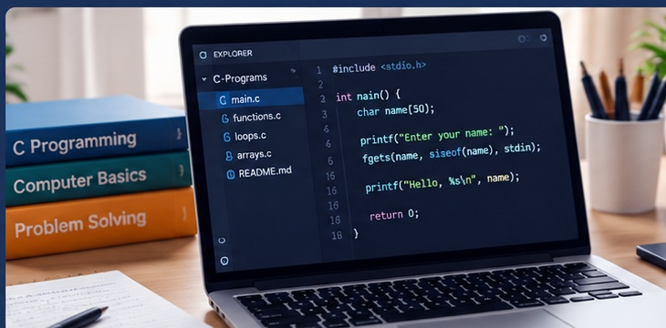
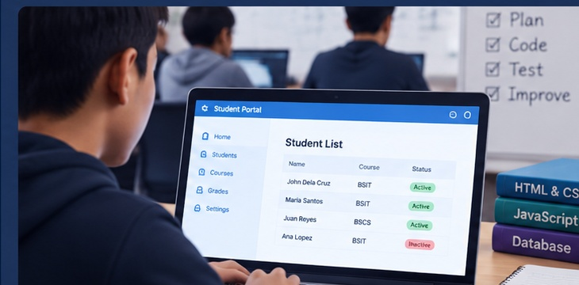

Project One
Developed programming lessons and activities to help students understand fundamental programming concepts, problem-solving, and coding practices.
View projectHello, I am
IT Instructor • Programmer • Web Developer
I TEACH INFORMATION TECHNOLOGY, PROGRAMMING, AND WEB DEVELOPMENT TO HELP STUDENTS BUILD PRACTICAL DIGITAL SKILLS.

Developed programming lessons and activities to help students understand fundamental programming concepts, problem-solving, and coding practices.
View project
Guided students in creating practical IT projects using programming, web development, and basic database technologies while developing their technical skills.
View projectEmail: seno.ninoangelo@gmail.com
GitHub: github.com/ninoangeloseno